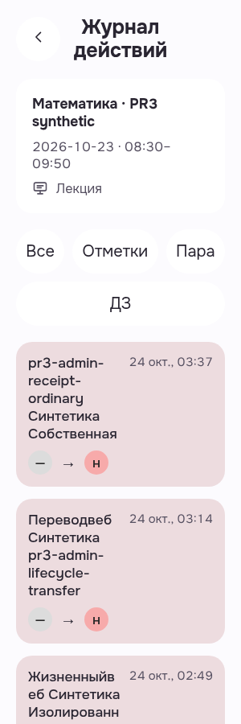
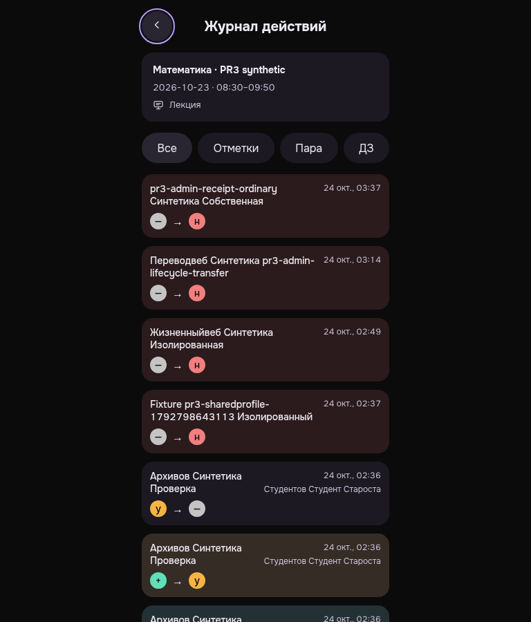

Староста: читаемые фильтры и тип пары
Оба найденных P3 закрыты: фильтры полностью видны при300/root20, Лекция отображается в обеих темах. После исправления проверен только изменённый визуальный результат.
Actual EXIT0/errors0; 300light/root20 and768dark/root16 keyboard Back focus. PWA presentation only; manual theme choice/TMA provider/full matrix not claimed. Functional history15/Back checks reused; no repeated Back activation or new action count. Exact-own DELETE204/sameBearer401, browser closed.
Manifest · Критерии и ограничения
История пары после исправления · light · 300 · 20px
Personally viewed original300light/root20: Все, Отметки, Пара are fully visible in first row; ДЗ occupies second full row without overlap or clipped text. Lesson context reads Лекция. History remains readable in this viewport.
PWA-MOBILE-HEADMANLESSONACTIONS__MB-HLA-AFTER-01-filters-and-russian-kind-root20__light__300__root20__3371d6438
revision 3371d6438b0144976cb338f0fa1bb14cc5c051bd
SHA256 ac6eb51f9b4ed10e170fb1f0223da96948e4c30c9dbd85c1c2bf07c85b73baba

История пары после исправления · dark · 768 · 16px
Personally viewed original768dark/root16: context reads Лекция; all four filters readable on one row; native Back has visible purple keyboard focus ring. No new presentation finding in the selected criteria; only the viewport subset of rows was inspected.
PWA-MOBILE-HEADMANLESSONACTIONS__MB-HLA-AFTER-02-russian-kind-back-keyboard-focus__dark__768__root16__3371d6438
revision 3371d6438b0144976cb338f0fa1bb14cc5c051bd
SHA256 4041cba0b0fed4555ea595ee51e625c03f6e531e93739d91f33aee10d1893073
